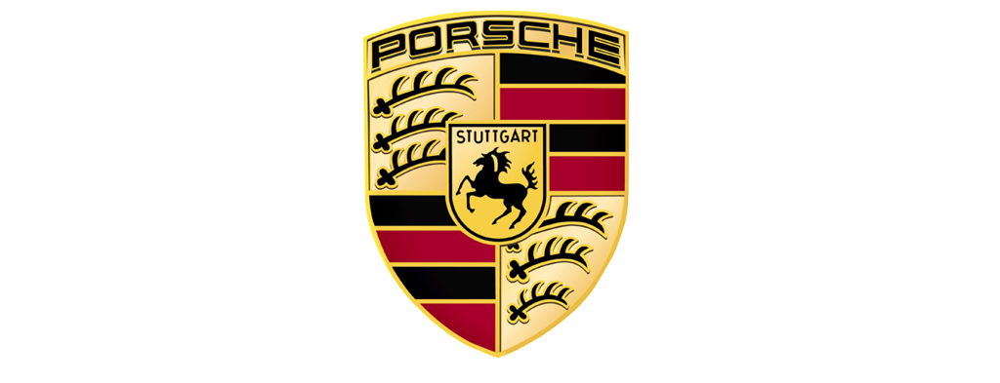
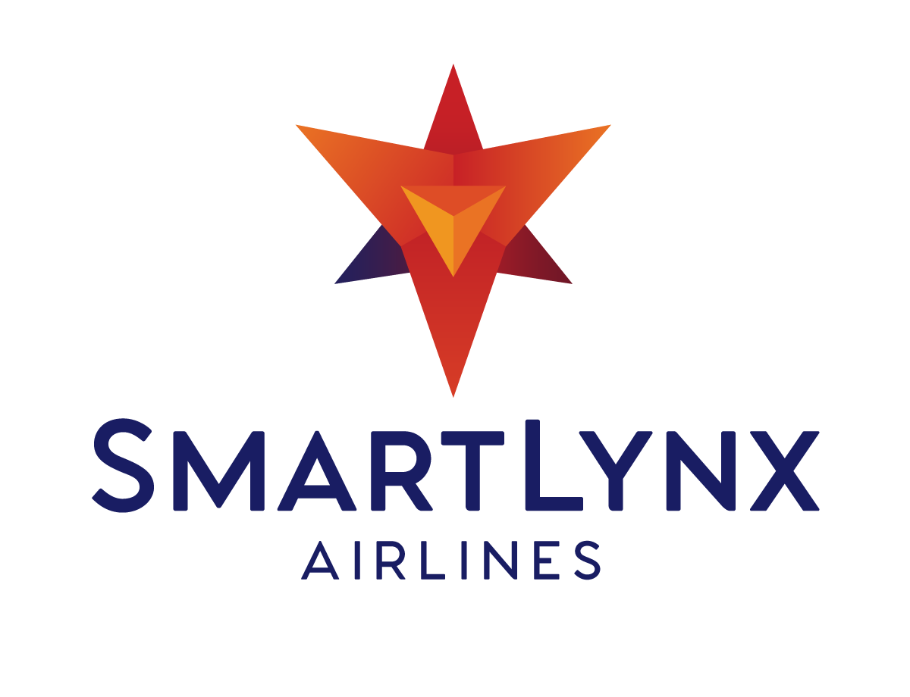
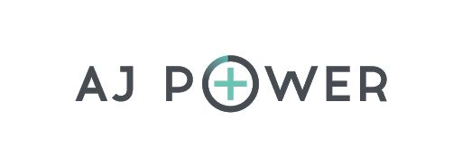

Sākums
The University of Latvia (LU) (Latvian: Latvijas Universitāte) is a state-run university located in Riga, Latvia. It was established in 1919. The university is ranked 801st-1000th in the world in 2019 and have had the highest place as 651st–700th in 2017 as well as 7th in the Baltic states after the University of Tartu, Vilnius University, Vilnius Gediminas Technical University, Tallinn University of Technology, Kaunas University of Technology and Riga Technical University and 50th in EECA (Emerging Europe and Central Asia) rating.
The University of Latvia, initially named as the Higher School of Latvia (Latvian: Latvijas Augstskola) was founded on September 28, 1919 on the basis of the former Riga Polytechnic (founded in 1862). The first rector of the university was chemist Paul Walden. In 1923, the school received its current name with the approval of its constitution, the University of Latvia (Universitas Latviensis).
In the period between 1919 and 1940, the University of Latvia was the main centre of higher education, science and culture in the Republic of Latvia. The former building of the Riga Polytechnic on Raiņa bulvāris 19 serves as the university's main building. In the pre-WWII years, it was possible to gain higher academic education not only at the University of Latvia but also at the Latvian State Conservatory and Academy of Arts.
With the beginning of the Soviet occupation, the university was renamed as the Latvian State University (LVU, Latvian: Latvijas Valsts Universitāte) from 1940 to 1941 and from 1944/1945 to 1958. Under the Nazi occupation, from 1942 to 1944/1945 its name was the University of Riga (Latvian: Rīgas Universitāte). After World War II, over time the Latvian University of Agriculture, Riga Stradiņš University, and Riga Technical University separated from the University of Latvia and became well-known centres of education and research in their own right. In 1958, the university was renamed as the Pēteris Stučka Latvian State University (Latvian: Pētera Stučkas Latvijas Valsts Universitāte), which was its official name until 1990.
With Latvia regaining independence, the Supreme Council of the Republic of Latvia reconfirmed the Constitution of the University of Latvia on September 18, 1991. It stated that the institution is "a state establishment of academic education, science and culture which serves the needs of Latvia and its people". Alongside the Constitution, the flag, the hymn, the University's emblem, the Rector's chain, and the official garments for the Rector, Vice-Rector and deans were re-adopted as attributes of the University of Latvia.
The EuroFaculty, created by the CBSS to support reforms at the universities in Tartu, Riga, and Vilnius was organized with its headquarters at the University of Latvia from 1993 to 2005. The Riga Teacher Training and Educational Management Academy was merged into the university in 2017.
Par mums

Dr.-Ing. h.c. F. Porsche AG, usually shortened to Porsche AG (German pronunciation:
(About this soundlisten); see below), is a German automobile manufacturer specializing in high-performance sports cars, SUVs and sedans. The headquarters of Porsche AG is in Stuttgart, and is owned by Volkswagen AG, a controlling stake of which is owned by Porsche Automobil Holding SE. Porsche's current lineup includes the 718 Boxster/Cayman, 911, Panamera, Macan, Cayenne and Taycan.
In 1964, after a fair amount of success in motor-racing with various models including the 550 Spyder, and with the 356 needing a major re-design, the company launched the Porsche 911: another air-cooled, rear-engined sports car, this time with a six-cylinder "boxer" engine. The team to lay out the body shell design was led by Ferry Porsche's eldest son, Ferdinand Alexander Porsche (F. A.). The design phase for the 911 caused internal problems with Erwin Komenda, who led the body design department until then. F. A. Porsche complained Komenda made unauthorized changes to the design. Company leader Ferry Porsche took his son's drawings to neighbouring chassis manufacturer Reuter. Reuter's workshop was later acquired by Porsche (so-called Werk 2). Afterward Reuter became a seat manufacturer, today known as Keiper-Recaro.
The design office gave sequential numbers to every project (See Porsche type numbers), but the designated 901 nomenclature contravened Peugeot's trademarks on all 'x0x' names, so it was adjusted to 911. Racing models adhered to the "correct" numbering sequence: 904, 906, 908. The 911 has become Porsche's most well-known model – successful on the race-track, in rallies, and in terms of road car sales. It remains in production; however, after several generations of revision, current-model 911s share only the basic mechanical configuration of a rear-engined, six-cylinder coupé, and basic styling cues with the original car. A cost-reduced model with the same body, but with a 356-derived four-cylinder engine, was sold as the 912.
In 1972, the company's legal form was changed from Kommanditgesellschaft (KG), or limited partnership, to Aktiengesellschaft (AG), or public limited company, because Ferry Porsche came to believe the scale of the company outgrew a "family operation", after learning about Soichiro Honda's "no family members in the company" policy at Honda. This led to the establishment of an Executive Board with members from outside the Porsche family, and a Supervisory Board consisting largely of family members. With this change, most family members in the operation of the company, including F. A. Porsche and Ferdinand Piëch, departed from the company.
F. A. Porsche founded his own design company, Porsche Design, which is renowned for exclusive sunglasses, watches, furniture, and many other luxury articles. Louise's son and Ferry's nephew Ferdinand Piëch, who was responsible for mechanical development of Porsche's production and racing cars (including the very successful 911, 908 and 917 models), formed his own engineering bureau, and developed a five-cylinder-inline diesel engine for Mercedes-Benz. A short time later he moved to Audi (used to be a division, then a subsidiary, of Volkswagen), and pursued his career through the entire company, ultimately becoming the Chairman of Volkswagen Group.

Rolex SA is a Swiss luxury watch manufacturer based in Geneva, Switzerland. Originally founded as Wilsdorf and Davis by Hans Wilsdorf and Alfred Davis in London, England in 1905, the company registered Rolex as the brand name of its watches in 1908 and became Rolex Watch Co. Ltd. in 1915. After World War I, the company moved its base of operations to Geneva, Switzerland to avoid heavy taxation in post-war Britain, and in 1920 Hans Wilsdorf registered Montres Rolex SA in Geneva as the new company name which eventually became Rolex SA in later years. Since 1960, the company has been owned by the Hans Wilsdorf Foundation, a private family trust.
Rolex SA and its subsidiary Montres Tudor SA design, manufacture, distribute and service wristwatches sold under the Rolex and Tudor brands. In 2018, Forbes ranked Rolex as the world's 71st most valuable brand.[1] As of June 2019, among the world's top ten most expensive watches ever sold at auctions, three are Rolex watches. In particular, Paul Newman's Rolex Daytona currently holds the title of the second most expensive wristwatch and the third most expensive watch ever sold at auction, fetching 17.75 million US dollars in New York on October 26, 2017.
Rolex is the largest manufacturer of Swiss made certified chronometers. In 2005, more than half the annual production of watches certified by Contrôle Officiel Suisse des Chronomètres (COSC) were Rolexes. To date, Rolex still holds the record for the most certified chronometer movements in the category of wristwatches.
In December 2008, following the abrupt departure of Chief Executive Patrick Heiniger for "personal reasons", Rolex SA denied that it had lost 1 billion Swiss francs (approx £574 million, $900 million) invested with Bernard Madoff, the American asset manager who pleaded guilty to an approximately £30 billion worldwide Ponzi scheme fraud. The company announced Heiniger's death on March 5, 2013.
Rolex SA is owned by the private Hans Wilsdorf Foundation, which is registered as a charity and does not pay corporate income taxes. In 2011, a spokesman for Rolex declined to provide evidence regarding the amount of charitable donations made by the Wilsdorf Foundation. In Geneva where the company is based, it is said to have gifted, among many things, two housing buildings to social institutions of Geneva.
Galerija

Smartlynx
.png)
Ekspresspasts

AJ Power
Airlines, iepriekš pazīstams kā LatCharter, ir Mārupē, Mārupes novadā bāzēta aviokompānija, kas iznomā lidmašīnas ar apkalpi (ACMI), veic regularus pasažieru lidojumus, kā arī īpašus pasažieru čartera lidojumus Eiropā, Āfrikā un Āzijā.
Uzņēmums arī piedāvā lidmašīnas apkalpes apmācības — SmartLynx ATO ir viens no vadošajiem aviolīniju pilotu apmācību uzņēmumiem Baltijas valstīs, piedāvājot tipa kvalifikācijas kursus ar Airbus A320 sērijas lidaparātiem. SmartLynx lidojumu apkalpes locekļi pārstāv vairāk nekā 17 tautības un līdz ar to runā vairākās valodās. Kapteiņiem ir vidēji vairāk nekā 5300 stundu lidojumu pieredze, savukārt otrajiem pilotiem — vairāk nekā 1900 stundu.
SmartLynx Airlines ieņem otro vietu Latvijā starp pasažieru aviopārvadātājiem. Uzņēmuma apgrozījums 2018. gadā bija ap 141 miljons eiro, bet uzņēmuma peļņa bija 18,95 miljoni eiro.
Eksprespasts nodrošina pieņemto sūtījumu apstrādi un garantētu piegādi "no rokas rokā" visā pasaulē. Mēs apkalpojam gan fiziskās un juridiskās personas, gan arī nodrošinām valdības speciālo sūtījumu piegādi, kā arī varam nodrošināt ļoti vērtīgu un lielu sūtījumu piegādi adresātam.
Kontakti